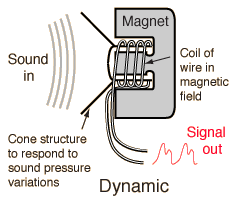
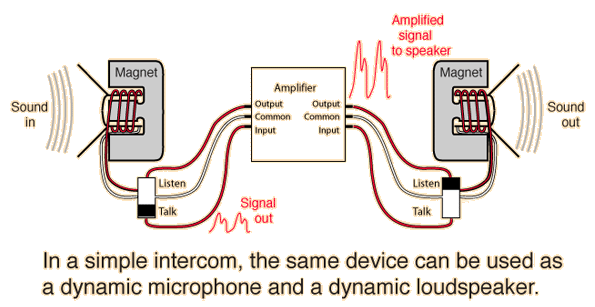

Dynamic Microphones

Principle: sound moves the cone and the attached coil of wire moves in the field of a magnet. The generator effect produces a voltage which "images" the sound pressure variation - characterized as a pressure microphone.
|
Advantages:
- Relatively cheap and rugged.
- Can be easily miniaturized.
Disadvantages:
- The uniformity of response to
different frequencies does not
match that of the ribbon or
condenser microphones.
|
The geometry of a dynamic microphone is like that of a tiny loudspeaker, and that is not just a coincidence. A dynamic microphone is essentially the inverse of a dynamic loudspeaker. In a dynamic microphone, the sound pressure variations move the cone, which moves the attached coil of wire in a magnetic field, which generates a voltage. In the loudspeaker, the inverse happens: the electric current associated with the electrical image of the sound is driven through the coil in the magnetic field, generating a force on that coil. The coil moves in response to the audio signal, moving the cone and producing sound in the air.

A small loudspeaker can be used as a dynamic microphone, and this fact is exploited in the construction of small intercom systems. Depending upon the position of the Talk-Listen switch, the device on either end of the intercom system can be used as a microphone or a loudspeaker. Of course, this is not a high fidelity process, and for commercial dynamic microphones, the device is optimized for use as a microphone, not a loudspeaker.
|
Index
Sound reproduction concepts |